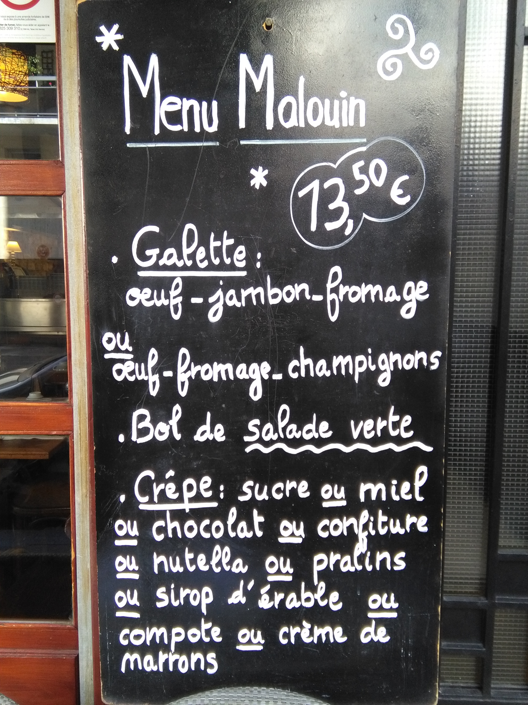
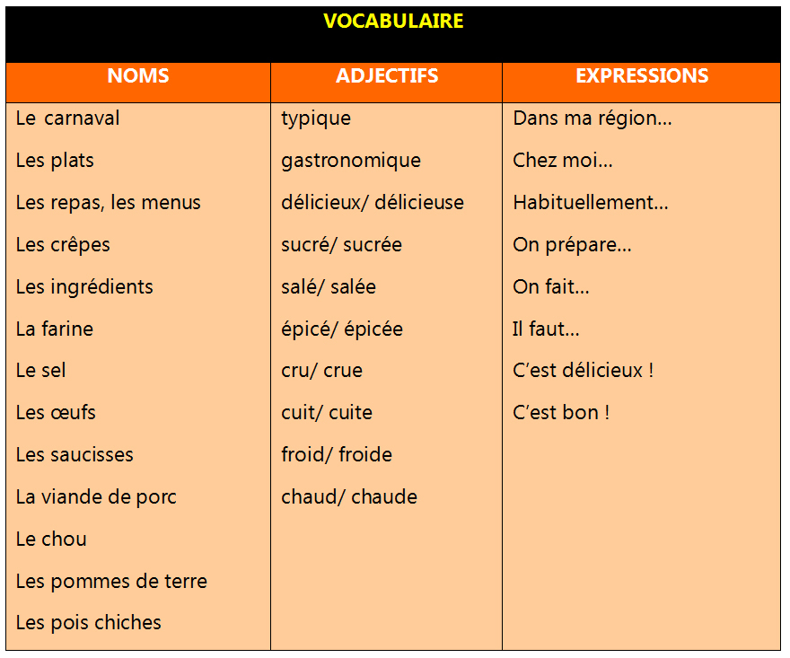

Jeu de rôle
Découvrez une tradition française : la Chandeleur
La Chandeleur se fête le 2 février, quarante jours après Noël. Ce jour-là, la tradition veut que l’on prépare des crêpes. C’est une tradition qui remonte aux temps des Romains et qui ensuite a été reprise par la chrétienté. Pour s’assurer que l’année sera bonne, pleine de richesse et de bonheur, la légende dit qu’il faut faire sauter les crêpes dans la poêle avec dans l’autre main une pièce de monnaie, de préférence en or ! Alors, n’oubliez pas de faire des crêpes ce jour-là !


Et maintenant, à vous de jouer… Aidez-vous du tableau de vocabulaire.
Vous invitez vos amis bretons à découvrir l´Andalousie et sa gastronomie et vous leur parlez des plats typiques.

Pour en savoir plus!
Pour en savoir plus: https://www.lepointdufle.net/penseigner/fetes_francophones-fiches-pedagogiques.htm